-
Casual male portraits
collected client works
These portraits outline the subjects in a more subtle, condensed way, different to my usually more intense set-dressing and world-building style.
Reduced elements of storytelling were still used to suggest atmosphere, boiled down for commercial use.
Musicians, artists, actors, public figures.
2022 - ongoing
- 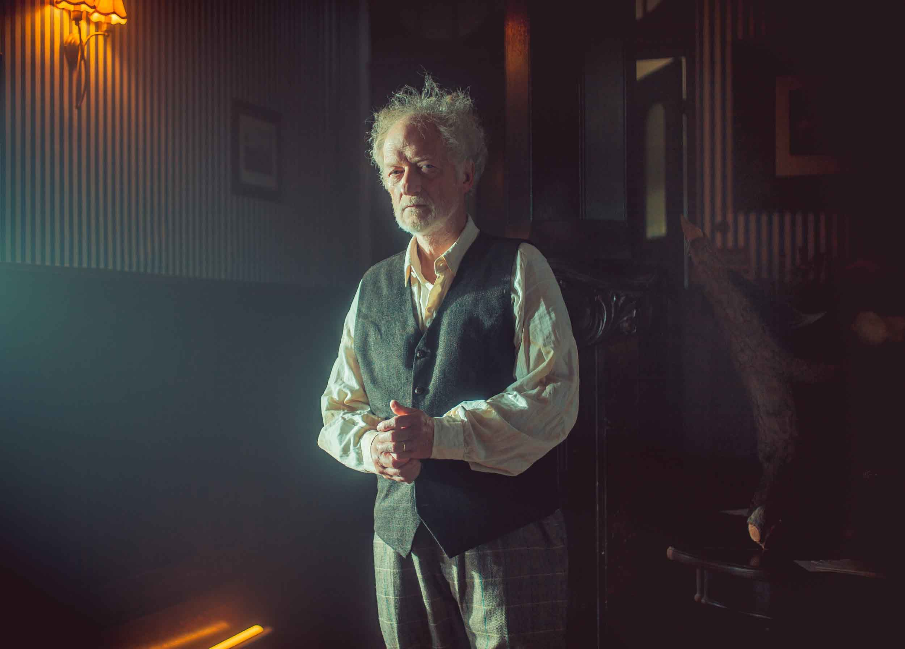
Falk Rockstroh · actor
- 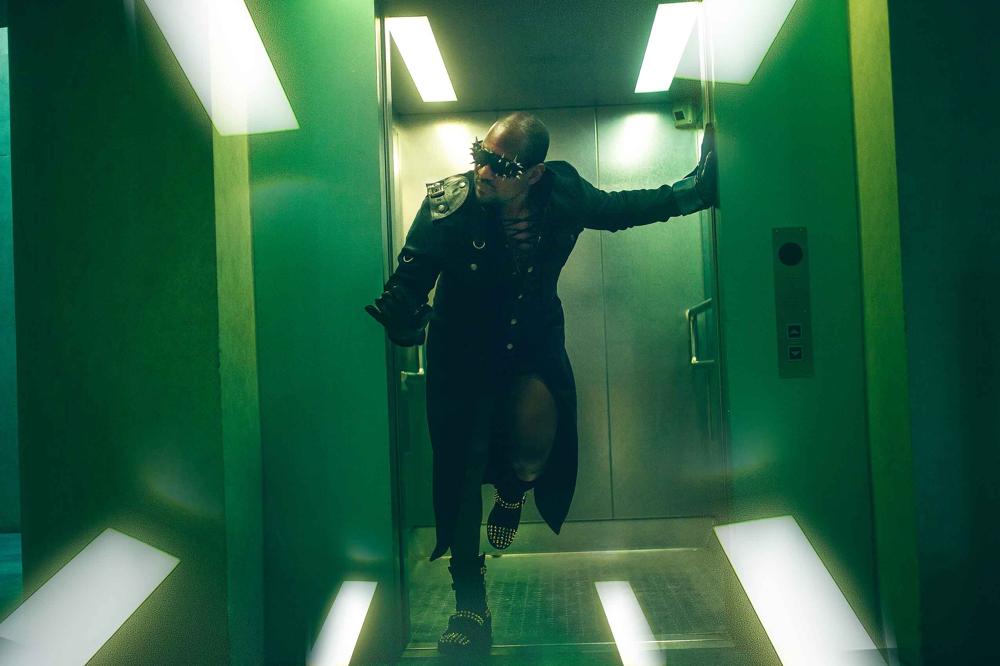
Jason Shane · electronic funk musician
- 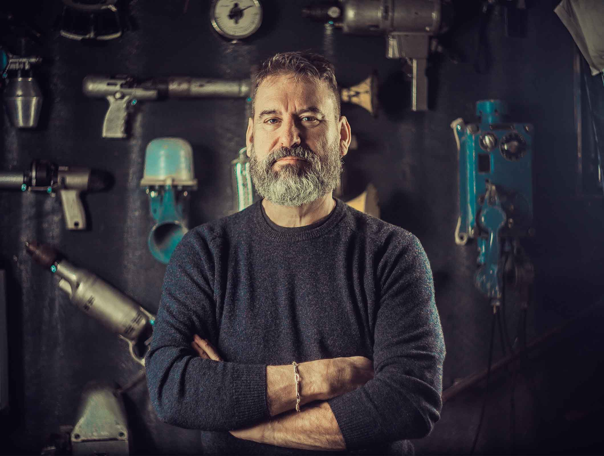
Herbert Mink · local craftsman
- 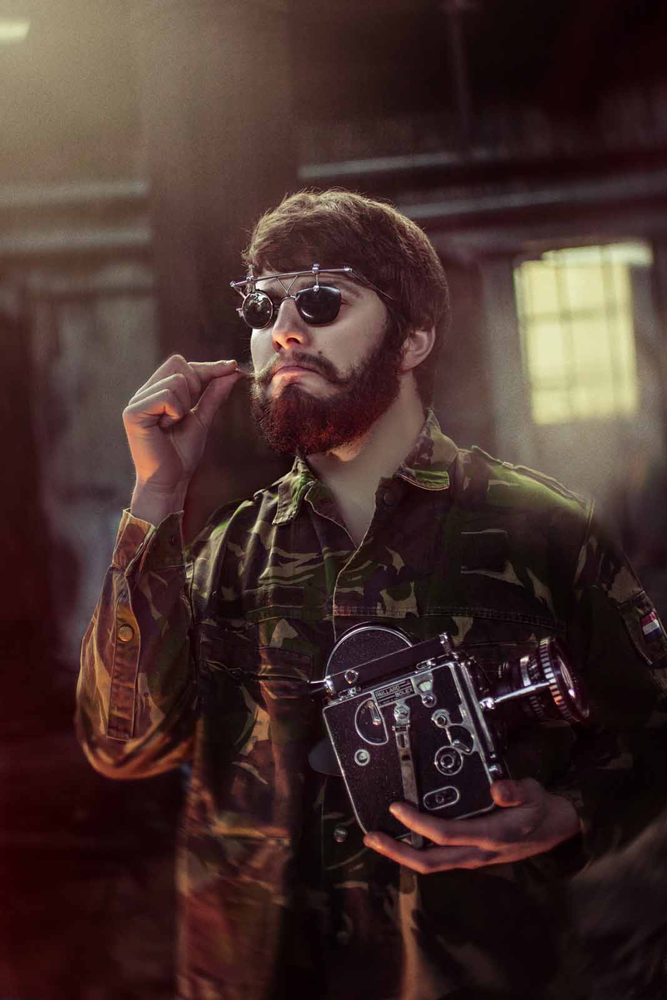
Michel Klares · filmmaker
- 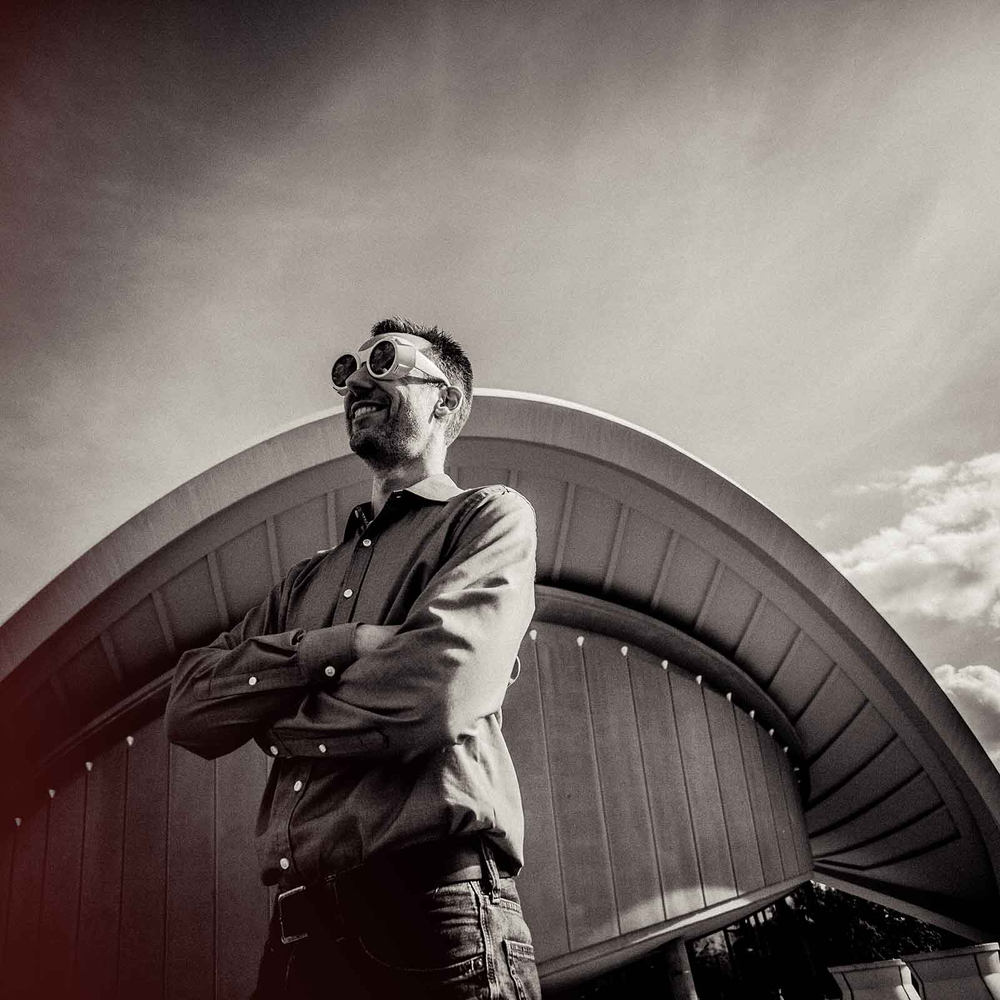
Björn Fihal · architect
- 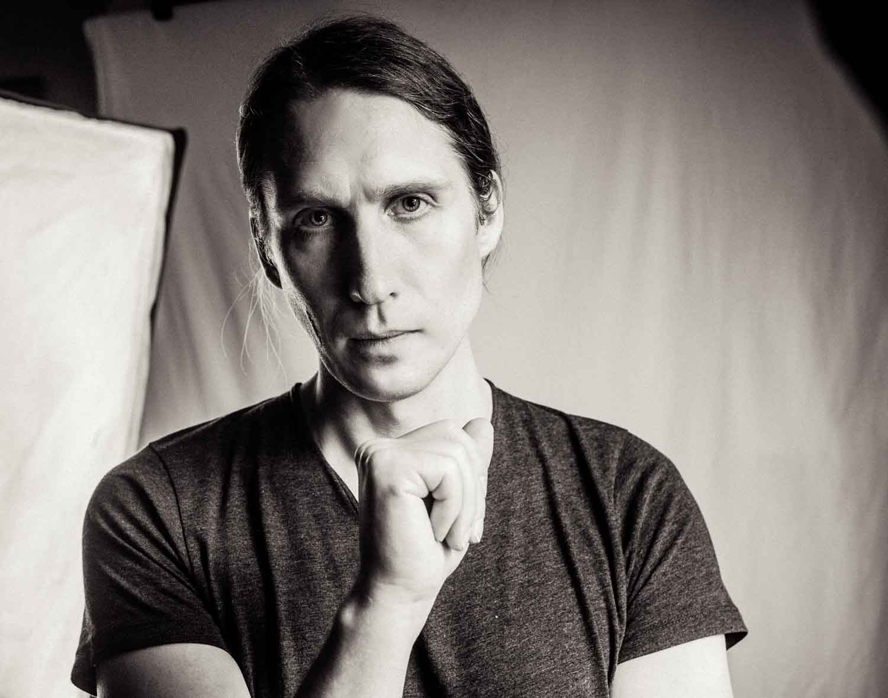
Nils Bandener · software architect
- 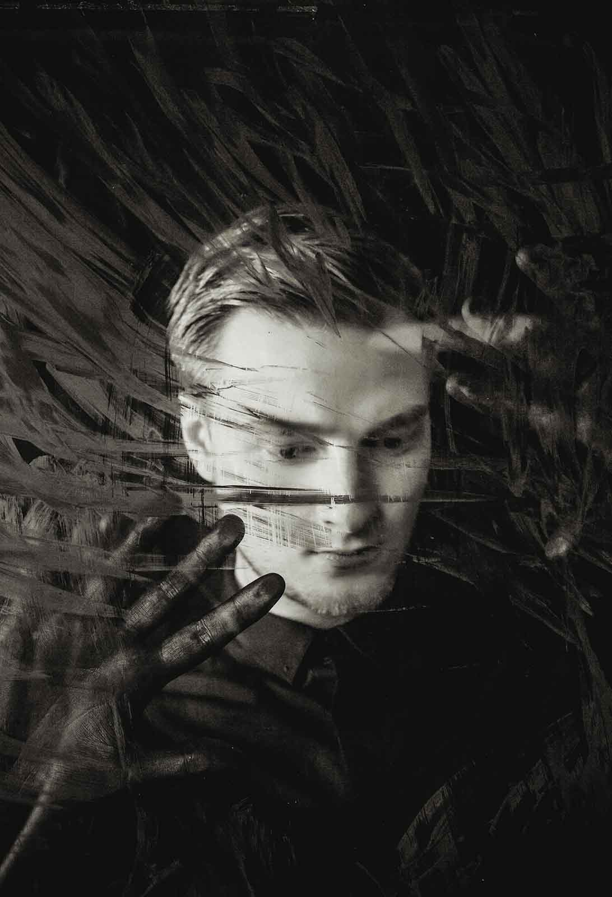
David N. · singer
- 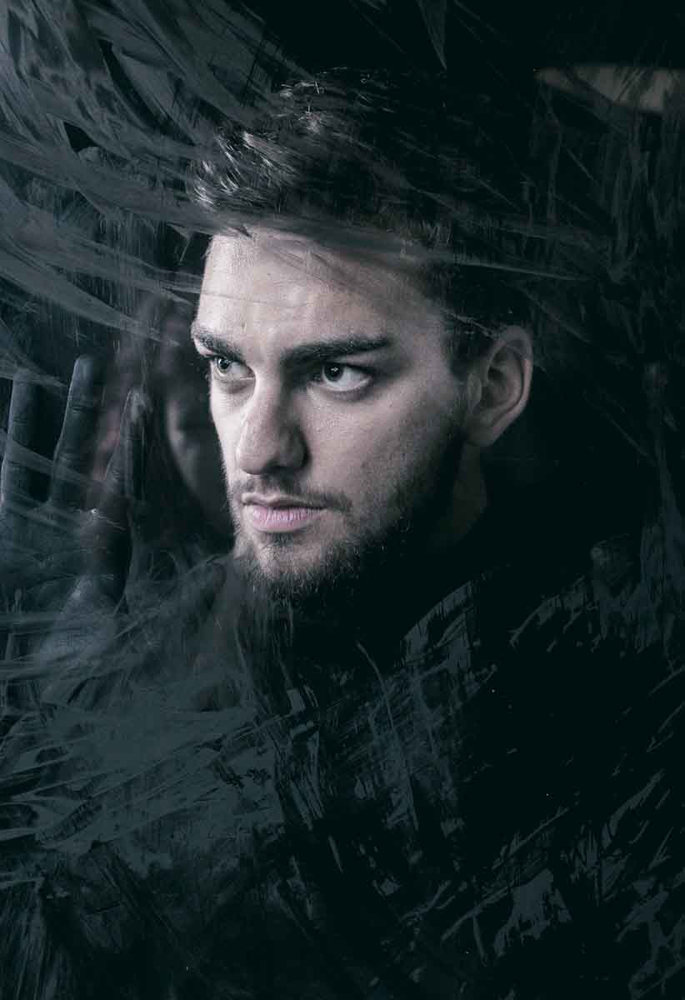
Marcus E. · drummer
- 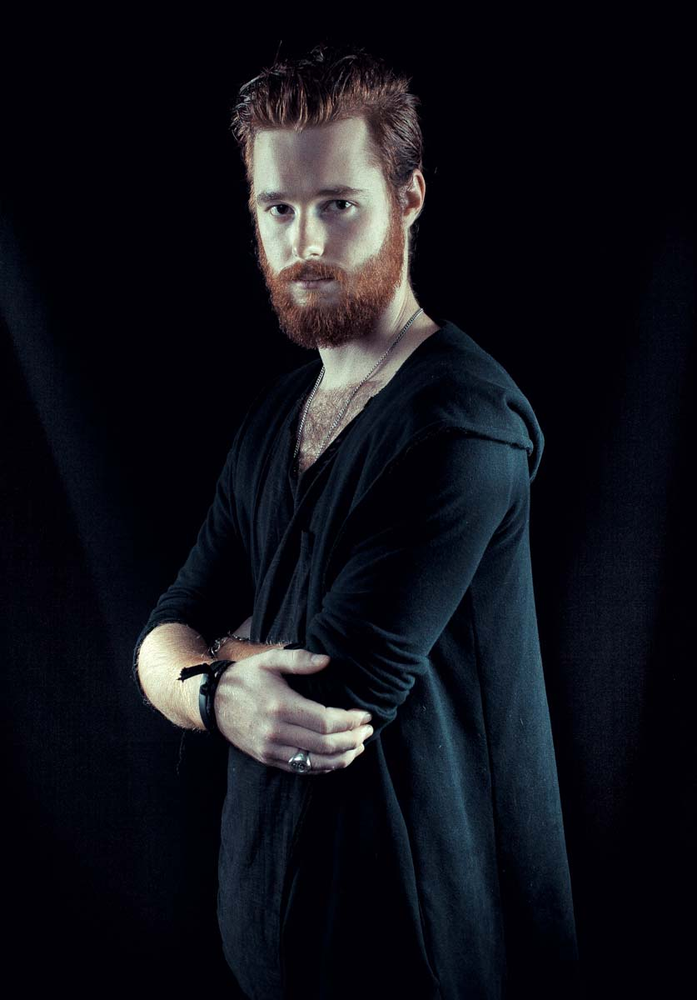
Josua C. · bass player
- 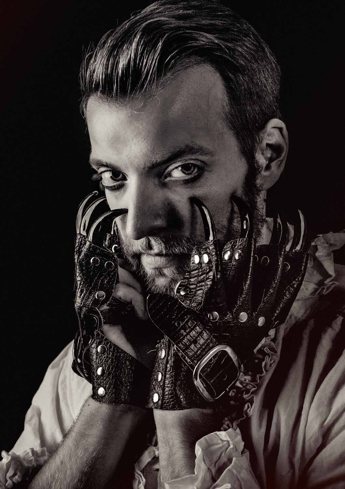
Lucas Melborn · content creator
- 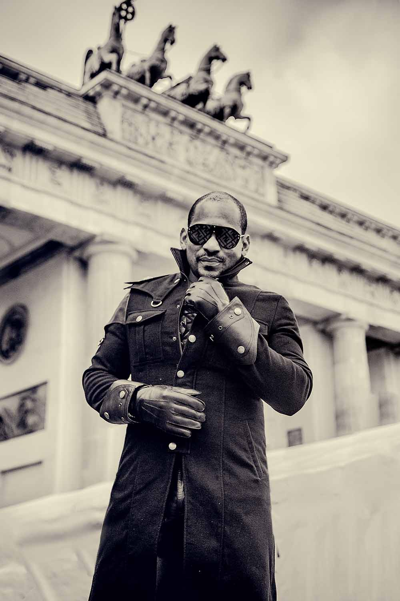
Frank Alberto · artist
- 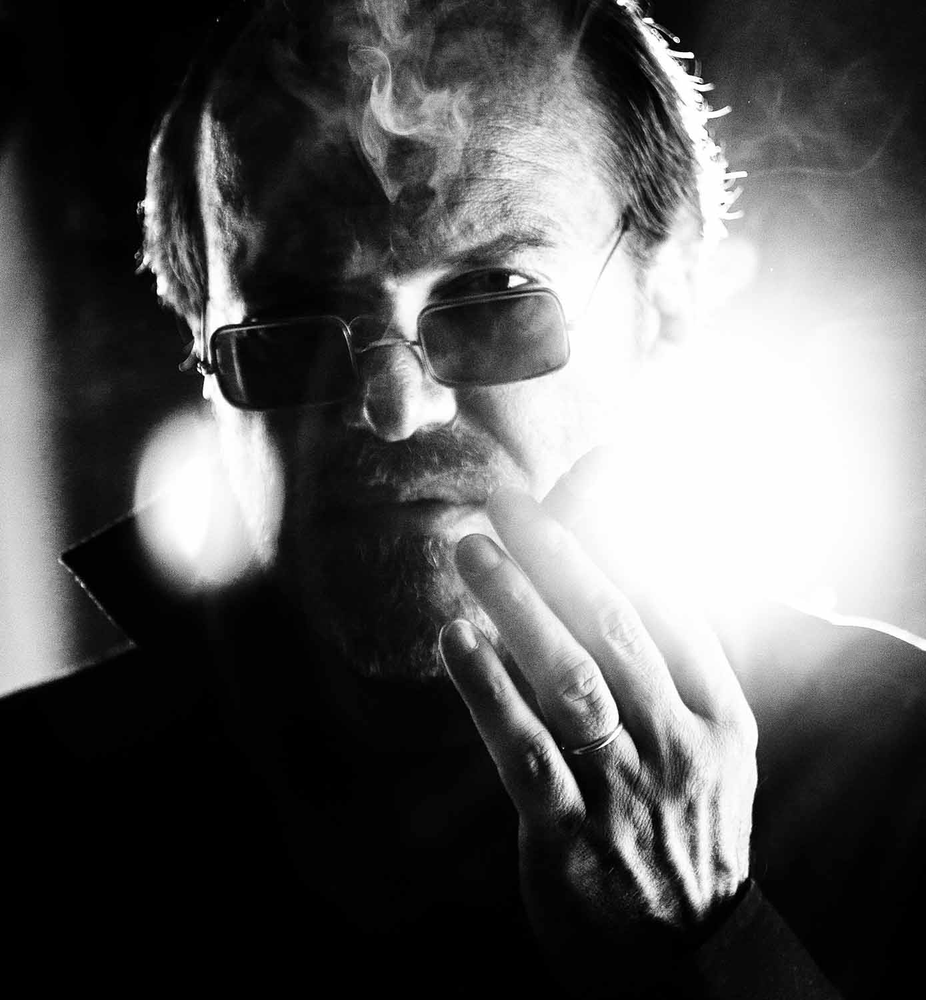
Heiko Triebener · musician
- 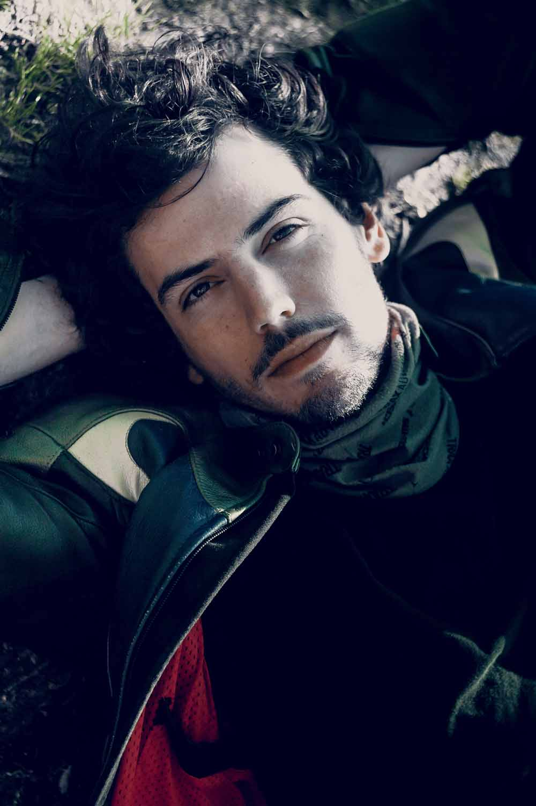
Lucas · motorcycle racing
- 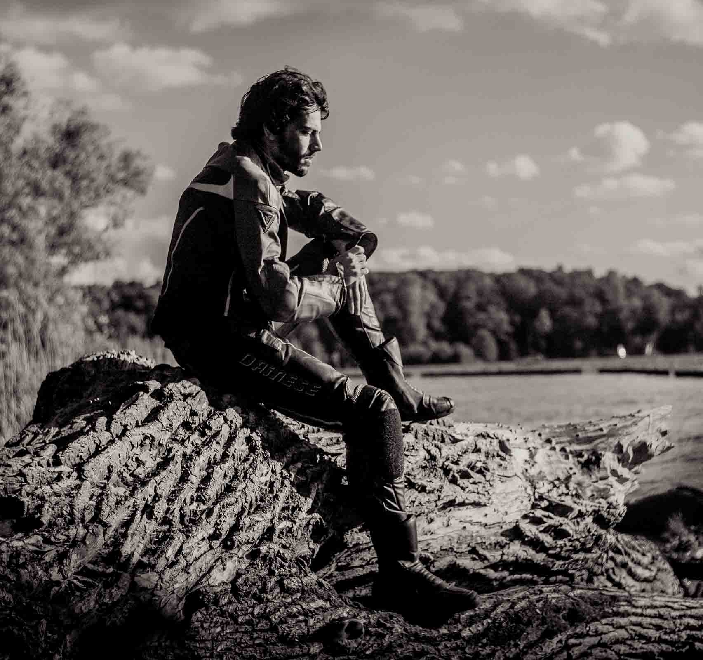